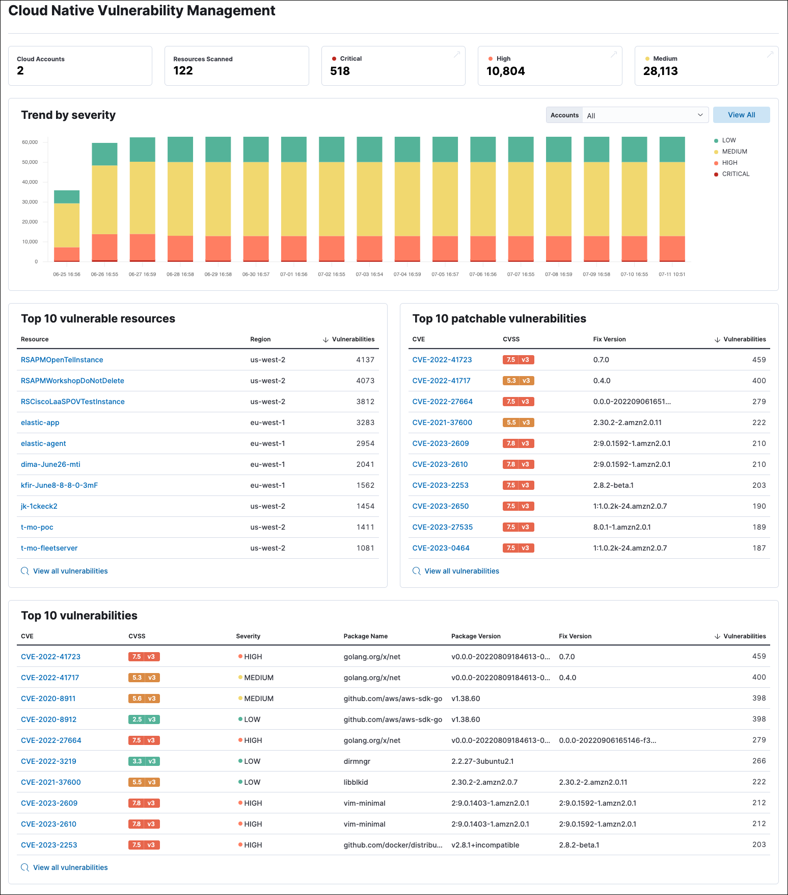

Cloud Native Vulnerability Management Dashboard
editThe Cloud Native Vulnerability Management (CNVM) dashboard gives you an overview of vulnerabilities detected in your cloud infrastructure.

Requirements
- To collect this data, install the Cloud Native Vulnerability Management integration.
CNVM dashboard UI
editThe summary cards at the top of the dashboard display the number of monitored cloud accounts, scanned virtual machines (VMs), and vulnerabilities (grouped by severity).
The Trend by severity bar graph complements the summary cards by displaying the number of vulnerabilities found on your infrastructure over time, sorted by severity. It has a maximum time scale of 30 days.
Graph tips
- Click the severity levels legend on its right to hide/show each severity level.
- To display data from specific cloud accounts, select the account names from the Accounts drop-down menu.
The page also includes three tables:
- Top 10 vulnerable resources shows your VMs with the highest number of vulnerabilities.
- Top 10 patchable vulnerabilities shows the most common vulnerabilities in your environment that can be fixed by a software update.
- Top 10 vulnerabilities shows the most common vulnerabilities in your environment, with additional details.
Click View all vulnerabilities at the bottom of a table to open the Vulnerabilities Findings page, where you can view additional details.